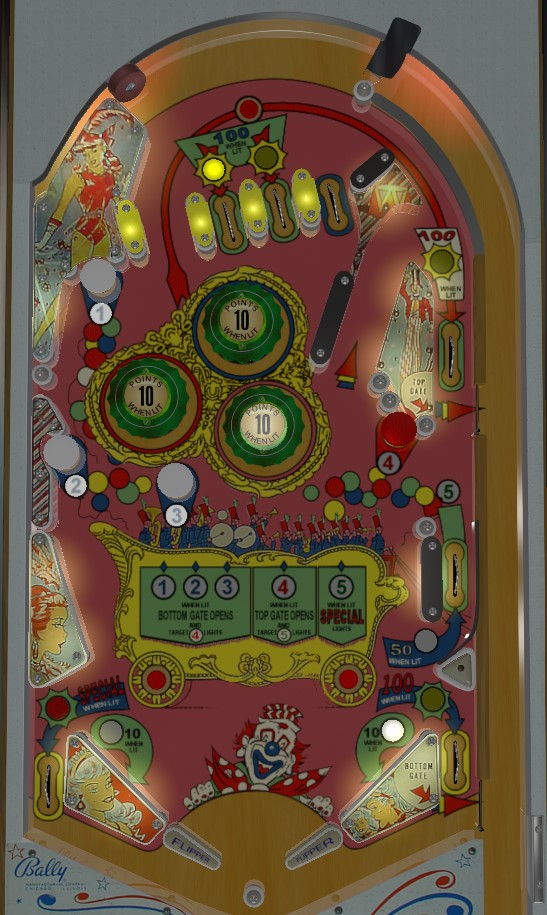

Hit the white mushroom bumpers on the left of the game labelled 1, 2, and 3 to open the right out lane gate, then shoot into the bumpers to try to get the ball stuck there score 10 point pops or shoot through the bumpers to get back to the top of the table with the goal of finding a 100 point top lane. #4 is only useful for opening an upper right gate in the u-turn lane that also closes the out lane gate when it is used, and #5 is only useful for lighting a special in the left out lane, and neither of those are worth meaningful points.
There are 3 top lanes. The rightmost top lane always scores 10 points. The left and middle top lanes alternating being lit each time a 5-point target is triggered. Lit lanes score 100 points, and unlit lanes score 10. The ball can come down from the top of the table via a gap to the left of the top lanes, scoring nothing.
Hit a lit mushroom bumper to collect that number and unlight it. All mushroom bumpers score 5 points. The three white mushroom bumpers in the left half of the game labelled 1-2-3 can be hit in any order. Collecting all three opens the right out lane gate and lights the red mushroom bumper on the right for #4. Collecting #4 opens the upper gate in the upper right u-turn lane and lights #5. #5 is collectible at the lower right side lane, and collecting it lights the left out lane for Special. Using either open gate at any time closes both gates, unlights the special, and fully resets the 1-2-3-4-5 sequence (though, since they are gates that redirect the ball to the shooter lane, you can continue playing and try to light everything again). The right out lane and u-turn lane score 5 and 10 points respectively, or 100 points when they are lit and their gate is open. The #5 lane in the middle right starts each ball worth 10 points, but this is increased to 50 points for the rest of the ball by rolling over either of the red rollover buttons near the slingshots that form the wheels of the titular band wagon.
The three pop bumpers and two slingshots are all worth 1 point, or 10 points when lit. This game uses a dynamic difficulty system similar to many other Bally games of the mid-1960s. A counter in the game increases by 1 step every time a replay score is passed in a game, and decreases by 1/2 step every time a game is played that does not meet the replay score. Whether or not each individual bumper or slingshot is lit is pseudo-random, changing every time a 1 point switch is scored; the higher the dynamic difficulty is, the less frequently the bumpers and slingshots will be lit on average, and less frequently lit pops and slings means lower scores. This mechanic means Band Wagon is not great as a competition game without extensive modification, as other players doing well can directly limit how many points are available to you.
There are no in lanes. Flippers back up directly to the slingshots. 2-inch mini-flippers are used. Out lanes score 5 points, or can be lit for Special on the left (by collecting 1-2-3-4-5) or 100 points and a free ball through the lower gate on the right (by collecting 1-2-3).
There is no end of ball bonus or extra ball feature. Tilt ends the ball in play only. To my knowledge, special cannot be set to score points instead of awarding a free game.